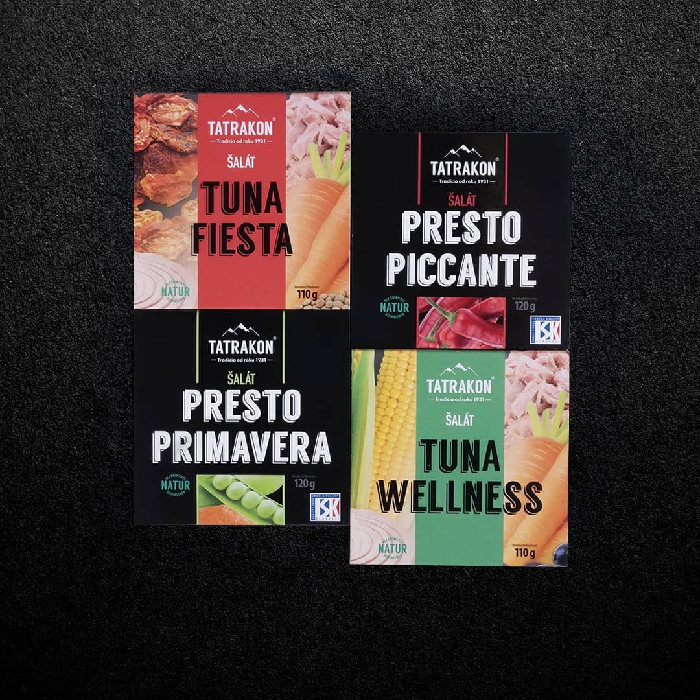

Kuracie šaláty podľa @tatrakon.sk — Normy Jedál
Tuniakové či kuracie? Všetky naše šaláty sú 🔝 snackmi kedykoľvek počas dňa 😉 #tatrakonsalaty
.
.
.
#tatrakon #spagety #spaghetti #dnesjem #pastalover #lunch #foodinspiration #foodnetwork #foodie #slovakia #slovensko #codnesjem #tatrakonsk #salad #salat #tuniakovesalaty #kuraciesalaty #presto #tunasalad #chickensalad #snack